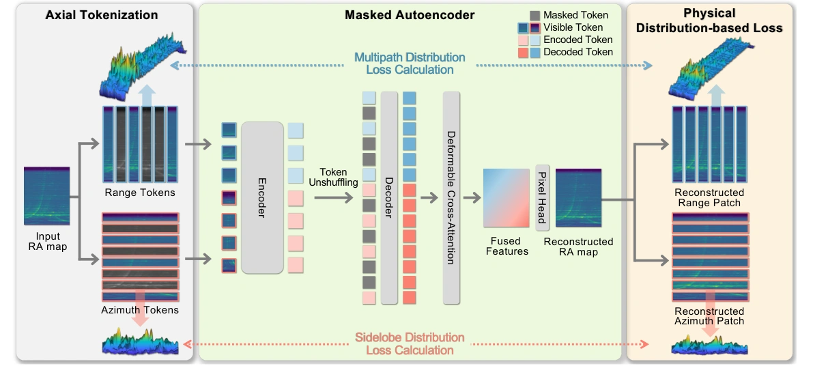
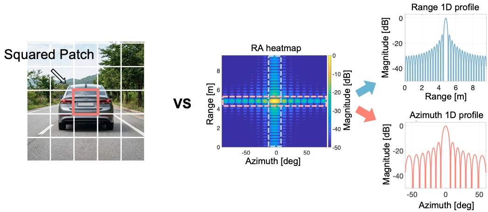
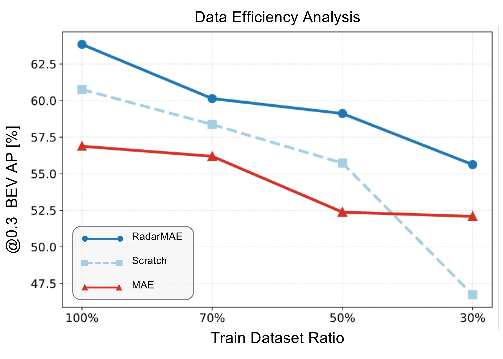

Pipeline

Why RadarMAE?
Why Self-Supervised Learning for Radar?
Radar supports perception in adverse weather, but learning from radar heatmaps requires costly annotations. Multipath reflections, sparse returns, and sidelobe clutter obscure object boundaries, making heatmaps difficult to interpret and label. This limits the amount of high-quality labeled data available for supervised learning.
The Labeled Data Gap
Labeled frames · selected dataset comparison
Self-supervised learning makes use of unlabeled radar data. By reconstructing masked regions, a masked autoencoder can learn local spatial structure before fine-tuning for object detection. However, radar signals call for a design that accounts for their physical properties.
Radar is fundamentally different from natural images.
RGB images primarily describe the visual appearance of a scene. Radar heatmaps instead represent processed reflections, where a target produces spatial patterns shaped by signal propagation and processing.
Radar responses exhibit mainlobes and sidelobes.
Unlike the local visual appearance captured by square patches in an RGB image, a radar target can produce an extended response across range and azimuth. Fourier processing over a finite observation window can spread a point-target response into a sinc-like mainlobe and sidelobes, rather than an ideal isolated point. Range and azimuth also have different resolutions and physical meanings, while multipath can extend reflections along range.

Can image-oriented MAEs fully exploit radar-specific structures?
Conventional square patches do not explicitly account for the distinct range–azimuth axes and can fragment extended response patterns. A standard pixel-wise MSE objective can also smooth out multipath tails and sidelobe peaks that carry useful information about the scene.
Physics-aware masked radar representation learning.
RadarMAE combines axial tokenization with axis-specific physical distribution losses. By preserving continuous response structures and modeling range multipath and azimuth sidelobes, it learns representations from unlabeled radar heatmaps that transfer to object detection.
Demo
Radar detection across normal conditions, sleet, heavy snow, fog, and nighttime rain.
Experimental Results
Radar Object Detection
Using only single-frame range-azimuth heatmaps, RadarMAE achieves 64.17% BEV AP@0.3 on K-Radar-20, improving over EchoFusion by 9.72 percentage points and standard MAE by 7.29 percentage points.
| Method | Backbone | SSL | Input | BEV AP@0.3 ↑ | BEV AP@0.5 ↑ | 3D AP@0.3 ↑ | 3D AP@0.5 ↑ |
|---|---|---|---|---|---|---|---|
| EchoFusion | ResNet-50* | ✗ | 2D (RA) | 54.45 | 42.28 | 51.75 | 24.65 |
| RTNH | 3D-SCB | ✗ | 3D (RAE) | 61.38 | 46.47 | 53.05 | 17.98 |
| ViT-B | ViT-B | ✗ | 2D (RA) | 60.77 | 45.30 | 55.24 | 27.45 |
| MAE | ViT-B | ✓ | 2D (RA) | 56.88 | 42.86 | 52.97 | 26.47 |
| RadarMAE | ViT-B* | ✓ | 2D (RA) | 64.17 | 48.44 | 58.85 | 30.93 |
Data Efficiency

RadarMAE outperforms both training from scratch and standard MAE across all evaluated labeled training-data ratios, from 30% to 100%.
By incorporating radar-specific physical priors, RadarMAE maintains a consistent advantage even as the amount of labeled training data decreases.
Axial Tokenization
Axial tokenization achieves higher detection accuracy with 142 tokens and 30.14 total GFLOPs, compared with 448 tokens and 75.47 total GFLOPs for 8 × 8 patches.
| Tokenization | Tokens | BEV AP@0.3 ↑ | Encoder GFLOPs ↓ | Total GFLOPs ↓ |
|---|---|---|---|---|
| 16 × 16 | 112 | 49.46 | 17.67 | 23.97 |
| 8 × 8 | 448 | 54.91 | 48.51 | 75.47 |
| 4 × 16 | 448 | 55.23 | 50.04 | 77.93 |
| 16 × 4 | 448 | 54.59 | 47.65 | 74.15 |
| Axial | 142 | 57.46 | 22.22 | 30.14 |